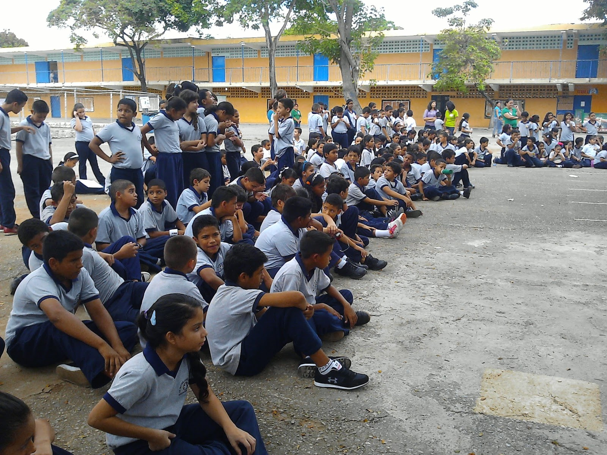

Ubicación
El Liceo “Héctor Castillo Reyes” se encuentra situado en la comunidad del Barrio Ezequiel Zamora, al oeste de la ciudad de Barquisimeto, específicamente en la calle 60 con Avenida Fuerzas Armadas, dentro del Municipio Concepción, Estado Lara, Venezuela. El encargado de la comunidad es Carlos Linares.
El Liceo “Héctor Castillo Reyes” fue fundado el 1° de noviembre de 1947, fruto del esfuerzo colectivo de una comunidad preocupada por la falta de atención educativa para los niños y niñas de la zona. Fue el propio vecindario el que, con el apoyo de docentes que también residían allí, comenzó a organizar actividades educativas en espacios improvisados, dando forma poco a poco a la institución.
Durante sus primeros años, el liceo no contaba con una sede fija, por lo que sus actividades se realizaban en distintos lugares temporales. Con el tiempo, y gracias al empeño de la comunidad, se logró establecer una infraestructura definitiva que hoy sigue siendo el hogar de esta institución. Esta historia no solo retrata el origen del liceo, sino que también habla del profundo compromiso de su comunidad con la educación y con el desarrollo de las nuevas generaciones.
La razón de ser del Liceo “Héctor Castillo Reyes” siempre se basó en su dedicación a brindar una formación académica sólida, centrada en el desarrollo integral de sus estudiantes. Su oferta educativa abarca la educación media general, y se ha consolidado como una alternativa accesible para los jóvenes de la comunidad de Brisas del Aeropuerto y sus alrededores.
